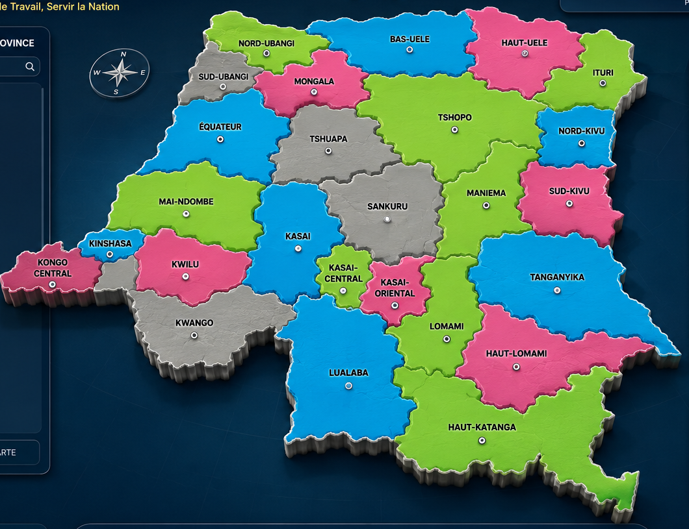

Couverture territoriale
Explorer les 26 provinces →
Touchez la carte pour explorer les 26 provinces
Système Numérique de Gestion des Agents de l’Inspection Générale du Travail
« La gestion moderne et sécurisée des agents de l’Inspection Générale du Travail. »
Recherchez rapidement un agent par nom ou matricule.
Textes réglementaires, ressort territorial et liste des agents administratifs intégrés à la bibliothèque documentaire.

Les Inspecteurs et Contrôleurs désignés sont invités à une réunion de service le 01 avril 2026 à 13h00.
Direction Provinciale de Kinshasa · 31 mars 2026Chargement des communiqués officiels…